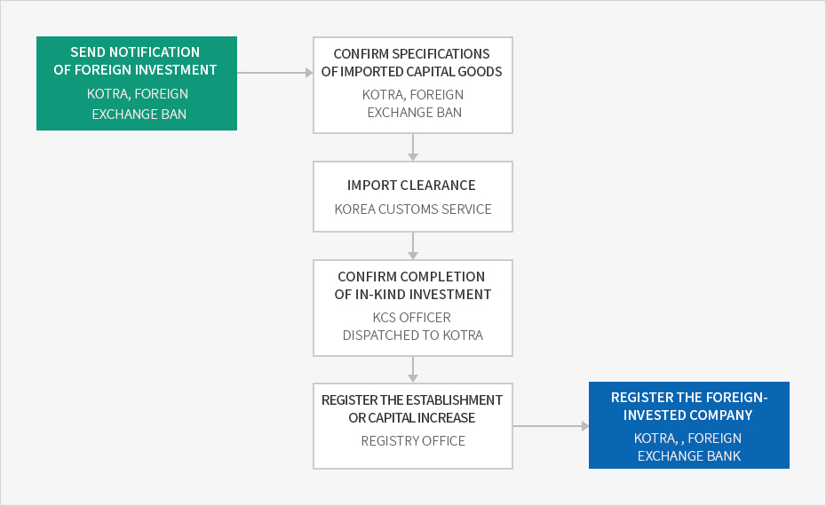
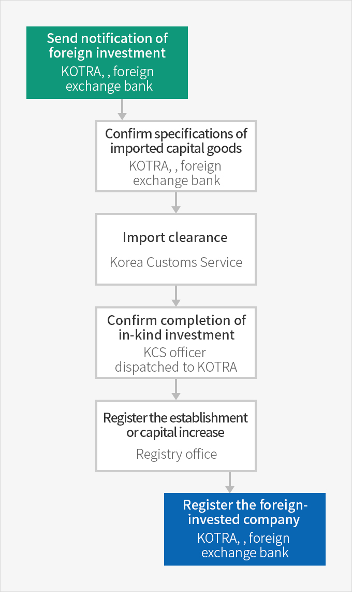

Capital Goods Importation
- Home
- Management·Living
- Customs Clearance
- Capital Goods Importation
When foreign investors expect a customs duty exemption on invested capital goods or when an in-kind investment of capital goods is made, customs clearance should be done following a review and confirmation of the specifications of the imported capital goods.
Customs Clearance Procedures for Capital Goods



- Send notification of foreign investment (KOTRA, foreign exchange bank)
- Confirm specifications of imported capital goods (KOTRA, foreign exchange bank)
- Improt clearance (Korea Customs Service)
- Comfirm completion of in-kind investment (KCS officer dispatched to Kotra)
- Register the establishment or capital increase(Registry office)
- Register the foreign-invested company(KOTRA, foreign exchange bank)

Confirmation of Specifications of Imported Capital Goods
An application for confirmation of the specifications of imported capital goods must be made at either a foreign exchange bank or KOTRA following notification of the foreign investment. The following must be reviewed and confirmed:
- Capital goods exempted from customs duties, individual consumption taxes and value-added taxes
- Capital goods imported by a foreign investor for investment purposes
- Or capital goods introduced into Korea by a foreign-invested company by means of foreign payment contributed by a foreign investor or by domestic payment obtained through the exchange of the said means of foreign payment, among the goods designated and publicly notified by the Minister of Trade, Industry and Energy
※ Related law : Article 38 of the Enforcement Decree of the Foreign Investment Promotion Act
※ Definition of capital goods: Article 2.1.8 of the Foreign Investment Promotion Act
※ Definition of capital goods: Article 2.1.8 of the Foreign Investment Promotion Act